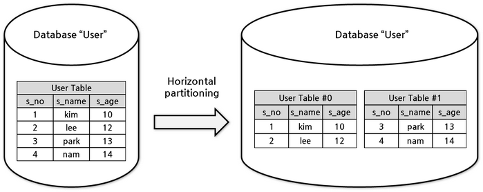
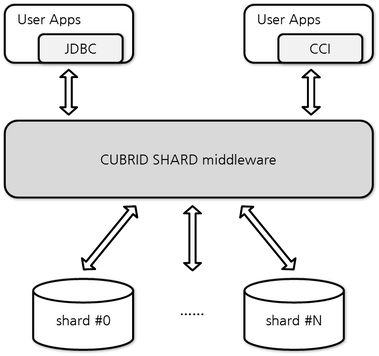
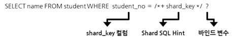
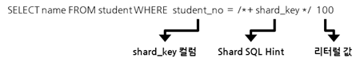
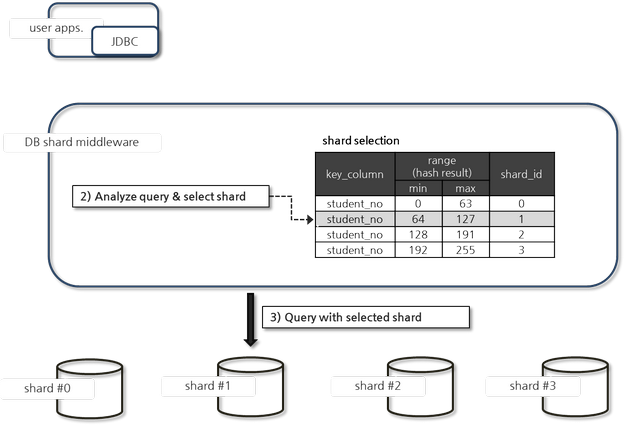
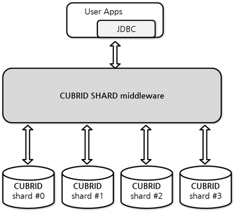

CUBRID SHARD
Database Sharding
수평 분할
수평 분할(Horizontal Partitioning)이란, 동일한 스키마를 가진 데이터를 행(row) 단위로 나누어 두 개 이상의 테이블에 분산 저장하는 방식을 말한다.
예를 들어, 하나의 ‘User Table’을 나이 기준으로 분할하여 13세 미만의 유저는 ‘User Table #0’, 13세 이상의 유저는 ‘User Table #1’에 저장하도록 설계할 수 있다.
수평 분할을 적용하면 각 테이블의 데이터 및 인덱스 크기가 작아져 쿼리 성능이 향상되며, 작업의 동시성도 높아져 전체적인 성능 개선을 기대할 수 있다.
수평 분할은 일반적으로 하나의 데이터베이스 내에서 이루어지며, 대용량 데이터를 효과적으로 관리하고 시스템 부하를 분산시키는 데 유용하다.

database sharding
database sharding은 물리적으로 다른 데이터베이스에 데이터를 수평 분할(horizontal partitioning) 방식으로 분산 저장하고 조회하는 방법을 말한다. 예를 들어 ‘User Table’이 여러 데이터베이스에 있을 때 13세 미만의 유저를 0번 데이터베이스에 13세 이상의 유저를 1번 데이터베이스에 저장되도록 하는 방식이다. database sharding은 성능상 이유뿐 아니라 하나의 데이터베이스 인스턴스에 넣을 수 없는 큰 데이터를 분산하여 처리하기 위해 사용된다.
분할된 각 데이터베이스를 shard 또는 database shard라고 부른다.

CUBRID SHARD
CUBRID SHARD는 database sharding을 위한 미들웨어로, 다음과 같은 특징을 갖는다.
기존 응용의 변경을 최소화하기 위한 미들웨어 형태로서, 흔히 사용되는 JDBC(Java Database Connectivity)나 CUBRID C API인 CCI(CUBRID C Interface)를 이용하여 투명하게 sharding된 데이터에 접근할 수 있다.
힌트를 이용하여 실제 질의 수행할 shard를 선택하는 방식으로, 기존 사용하던 질의에 힌트를 추가하여 사용할 수 있다.
일부 트랜잭션의 특성을 보장한다.
CUBRID SHARD 주요 기능
미들웨어 구조
CUBRID SHARD는 응용 프로그램과 물리적 또는 논리적으로 분할된 shard의 중간에 위치하는 미들웨어(middleware)로서, 동시에 다수의 응용 프로그램과의 연결을 유지하며, 응용의 요청이 있는 경우 적절한 shard로 전달하여 처리하고 결과를 응용에 반환하는 기능을 수행한다.

일반적으로 사용되는 JDBC(Java Database Connectivity)나 CUBRID C 인터페이스인 CCI(CUBRID C Interface)를 이용하여 CUBRID SHARD로 연결하여 응용의 요청을 처리할 수 있으며, 별도의 드라이버나 프레임워크가 필요 없기 때문에 기존 응용의 변경을 최소화할 수 있다.
CUBRID SHARD middleware는 broker/proxy/CAS 세 개의 프로세스로 구성되며, 각 프로세스의 간략한 기능은 다음과 같다.

broker
JDBC/CCI 등 드라이버로부터의 최초 연결 요청을 수신하고, 수신된 연결 요청을 부하 분산 정책에 따라 proxy로 전달
proxy 프로세스와 CAS 프로세스의 상태 감시 및 복구
proxy
드라이버로부터의 사용자 요청을 CAS로 전달하고, 처리한 결과를 응용에 반환
드라이버 및 CAS와의 연결 상태 관리 및 트랜잭션 처리
CAS
분할된 shard DB와 연결을 생성하고, 그 연결을 이용하여 proxy로부터 수신한 사용자 요청(질의)를 처리
트랜잭션 처리
shard SQL 힌트를 이용한 shard DB 선택
shard SQL 힌트
CUBRID SHARD는 SQL 힌트 구문에 포함된 힌트와 설정 정보를 이용하여, 응용으로부터 요청된 질의를 실제로 처리할 shard DB를 선택한다. 사용 가능한 SQL 힌트의 종류는 다음과 같다.
SQL 힌트 |
설명 |
|---|---|
/*+ shard_key */ |
shard key 칼럼에 해당하는 바인드 변수 또는 리터럴 값의 위치를 지정하기 위한 힌트 |
/*+ shard_val( value ) */ |
질의 내에 shard key에 해당하는 칼럼이 존재하지 않는 경우 힌트 내에 shard key를 명시적으로 지정하기 위한 힌트 |
/*+ shard_id( shard_id ) */ |
사용자가 특정 shard DB를 지정하여 질의를 처리하고자 할 때 사용하는 힌트 |
설명을 위해 간략하게 용어를 정리하면 다음과 같다. 용어에 대한 보다 자세한 설명은 CUBRID SHARD 기본 용어를 참고한다.
shard key : shard DB를 식별할 수 있는 칼럼. 일반적으로 shard DB 내의 모든 혹은 대부분의 테이블에 존재하는 칼럼으로서, DB 내에서 유일한 값을 갖는다.
shard id : shard를 논리적으로 구분할 수 있는 식별자. 예를 들어, 하나의 DB가 4개의 shard DB로 분할되면 4개의 shard id가 존재한다.
힌트와 설정 정보를 이용한 자세한 질의 처리 절차는 shard SQL 힌트를 이용하여 질의가 수행되는 일반적인 절차를 참고한다.
참고
하나의 질의 안에 두 개 이상의 shard 힌트가 존재할 경우 서로 같은 shard를 가리키면 정상 처리하고, 다른 shard를 가리키면 오류 처리한다.
SELECT * FROM student WHERE shard_key = /*+ shard_key */ 250 OR shard_key = /*+ shard_key */ 22;위와 같은 경우 250과 22가 같은 shard를 가리키면 정상 처리, 다른 shard를 가리키면 오류 처리한다.
여러 개의 값을 바인딩하는 배열로 질의를 일괄 처리하는 드라이버 함수(예: JDBC의 PreparedStatement.executeBatch, CCI의 cci_execute_array)에서 여러 개의 질의 중 하나라도 다른 shard에 접근하는 질의가 있으면 모두 오류 처리한다.
shard 환경에서 한번에 여러 문장을 실행하는 함수(예: JDBC의 Statement.executeBatch, CCI의 cci_execute_batch)는 추후 지원할 예정이다.
shard_key 힌트
shard_key 힌트는 바인드 변수나 리터럴 값의 위치를 지정하기 위한 힌트로서, 반드시 바인드 변수나 리터럴 값의 앞에 위치해야 한다.
예) 바인드 변수 위치 지정. 실행 시 바인딩되는 student_no 값에 해당하는 shard DB에서 질의를 수행.
SELECT name FROM student WHERE student_no = /*+ shard_key */ ?;
예) 리터럴 값 위치 지정. 실행 시 리터럴 값인 student_no가 123에 해당하는 shard DB에서 질의를 수행
SELECT name FROM student WHERE student_no = /*+ shard_key */ 123;
shard_val 힌트
shard_val 힌트는 질의 내에 shard DB를 식별할 수 있는 shard key 칼럼이 존재하지 않는 경우 사용하며, 실제 질의 처리 시 무시되는 shard key 칼럼을 shard_val 힌트의 값으로 설정한다. shard_val 힌트는 SQL 구문의 어느 곳에나 위치할 수 있다.
예) shard key가 student_no이나 질의 내에 포함되지 않은 경우. shard key인 student_no가 123에 해당하는 shard DB에서 질의를 수행
SELECT age FROM student WHERE name =? /*+ shard_val(123) */;
shard_id 힌트
shard_id 힌트는 shard key 칼럼의 값과 무관하게 사용자가 특정 shard를 지정하여 질의를 수행하고자 할 때 사용한다. shard_id 힌트는 SQL 구문의 어느 곳에나 위치할 수 있다.
예) shard DB #3 에서 질의를 수행해야 하는 경우. shard DB #3에서 age가 17보다 큰 학생을 조회
SELECT * FROM student WHERE age > 17 /*+ shard_id(3) */;
shard SQL 힌트를 이용하여 질의가 수행되는 일반적인 절차
질의 수행
다음은 사용자 질의 요청이 수행되는 과정이다.

응용 프로그램은 JDBC 인터페이스를 통해 CUBRID SHARD로 질의 처리를 요청하며, 실제로 질의가 수행될 shard DB를 지정하기 위해 SQL 구문 내에 shard_key 힌트를 추가한다.
SQL 힌트는 SQL 구문 내에서 위 예에서와 마찬가지로 shard key로 설정된 칼럼의 바인드 또는 리터럴 값 바로 앞에 위치해야 한다.
바인드 변수에 설정된 shard SQL 힌트는 다음과 같다.

리터럴 값에 지정된 shard SQL 힌트는 다음과 같다.

질의 분석 및 실제 요청을 처리할 shard DB 선택
질의를 분석하고 실제로 요청을 처리할 shard DB를 선택하는 과정은 다음과 같다.

사용자로부터 수신한 SQL 질의를 내부에서 처리하기 위한 형태로 다시 작성된다(query rewrite).
사용자가 요청한 SQL 구문과 힌트를 이용하여 실제 질의를 수행한 shard DB를 선택한다.
바인드 변수에 SQL 힌트가 설정된 경우, execute 시 shard_key 바인드 변수에 대입된 값을 해시한 결과와 설정 정보를 이용하여 실제 질의가 수행될 shard DB를 선택한다.
해시 함수는 사용자가 별도로 지정할 수 있으며, 지정하지 않은 경우 기본 내장된 해시 함수를 이용하여 shard_key 값을 해싱한다. 기본 내장된 해시 함수는 다음과 같다.
shard_key가 정수인 경우
기본 해시 함수(shard_key) = shard_key mod SHARD_KEY_MODULAR 파라미터(기본값 256)shard_key가 문자열인 경우
기본 해시 함수(shard_key) = shard_key[0] mod SHARD_KEY_MODULAR 파라미터(기본값 256)
참고
shard_key 바인드 변수의 값이 100인 경우, “기본 hash 함수(shard_key) = 100 % 256 = 100”이므로, 설정에 의해 해시 결과 100에 해당하는 shard DB #1이 선택되며, 선택된 shard DB #1으로 사용자 요청을 전달하게 된다.
질의 수행 결과 반환
질의 수행 결과를 반환하는 과정은 다음과 같다.

shard DB #1 에서 수행한 처리 결과를 수신하여, 요청한 응용으로 결과를 반환한다.
참고
여러 개의 값을 바인딩하는 배열로 질의를 일괄 처리하는 드라이버 함수(예: JDBC의 executeBatch, CCI의 cci_execute_array, cci_execute_batch)에서 다른 shard에 접근하는 값이 존재하면 오류 처리한다.
트랜잭션 지원
트랜잭션 처리
CUBRID SHARD는 ACID 중 Atomicity(원자성)을 보장하기 위한 내부적인 처리 절차를 수행한다. 예를 들어, 트랜잭션 중 응용이 비정상 종료하는 등의 예외가 발생하면 해당 응용의 질의를 처리하던 shard DB로 롤백 요청을 전달하여 해당 트랜잭션 중 변경된 내용을 모두 무효화한다.
그 외 일반적인 트랜잭션의 특성인 ACID는 backend DBMS의 특성과 설정에 따라 보장된다.
제약 사항
2PC(2 Phase commit)는 불가능하며, 이 때문에 하나의 트랜잭션 중 여러 개의 shard DB로 질의를 수행하는 경우 에러 처리된다.
빠른 시작
구성 예
예로 설명될 CUBRID SHARD는 아래 그림과 같이 4개의 CUBRID SHARD DB로 구성되었으며, 응용은 JDBC 인터페이스를 사용하여 사용자 요청을 처리한다.

shard DB 및 사용자 계정 생성 후 시작
위 구성의 예와 같이 각 shard DB 노드에서 shard DB 및 사용자 계정을 생성한 후 데이터베이스를 인스턴스를 시작한다.
shard DB 이름 : shard1
shard DB 사용자 계정 : shard
shard DB 사용자 비밀번호 : shard123
sh> # CUBRID SHARD DB 생성
sh> cubrid createdb shard1 en_US
sh> # CUBRID SHARD 사용자 계정 생성
sh> csql -S -u dba shard1 -c "create user shard password 'shard123'"
sh> # CUBRID SHARD DB 시작
sh> cubrid server start shard1
서비스 시작 및 모니터링
CUBRID SHARD 시작
CUBRID SHARD 기능을 사용하려면 아래와 같이 브로커를 구동한다.
sh> cubrid broker start
@ cubrid broker start
++ cubrid broker start: success
CUBRID SHARD 상태 조회
아래와 같이 CUBRID SHARD의 상태를 조회하여, 설정된 파라미터와 프로세스의 상태를 확인한다.
sh> cubrid broker status
@ cubrid broker status
% shard1
----------------------------------------------------------------
ID PID QPS LQS PSIZE STATUS
----------------------------------------------------------------
1-0-1 21272 0 0 53292 IDLE
1-1-1 21273 0 0 53292 IDLE
1-2-1 21274 0 0 53292 IDLE
1-3-1 21275 0 0 53292 IDLE
sh> cubrid broker status -f
@ cubrid broker status
% shard1
----------------------------------------------------------------------------------------------------------------------------------------------------------
ID PID QPS LQS PSIZE STATUS LAST ACCESS TIME DB HOST LAST CONNECT TIME SQL_LOG_MODE
----------------------------------------------------------------------------------------------------------------------------------------------------------
1-0-1 21272 0 0 53292 IDLE 2013/01/31 15:00:24 shard1@HostA HostA 2013/01/31 15:00:25 -
1-1-1 21273 0 0 53292 IDLE 2013/01/31 15:00:24 shard1@HostB HostB 2013/01/31 15:00:25 -
1-2-1 21274 0 0 53292 IDLE 2013/01/31 15:00:24 shard1@HostC HostC 2013/01/31 15:00:25 -
1-3-1 21275 0 0 53292 IDLE 2013/01/31 15:00:24 shard1@HostD HostD 2013/01/31 15:00:25 -
응용 예제 프로그램 작성
간단한 Java 프로그램을 이용하여 CUBRID SHARD 기능이 정상 동작함을 확인한다.
예제 테이블 생성
모든 shard DB에서 예제 프로그램을 위한 임시 테이블을 아래와 같이 생성한다.
sh> csql -C -u shard -p 'shard123' shard1@localhost -c "create table student (s_no int, s_name varchar, s_age int, primary key(s_no))"
예제 프로그램 작성
다음은 0~1023번의 학생 정보를 shard DB로 입력하는 예제 프로그램이다. 앞선 절차에서 수정한 cubrid_broker.conf 를 확인하여 주소/포트 및 사용자 정보를 연결 URL에 설정한다.
import java.sql.DriverManager;
import java.sql.Connection;
import java.sql.SQLException;
import java.sql.Statement;
import java.sql.ResultSet;
import java.sql.ResultSetMetaData;
import java.sql.PreparedStatement;
import java.sql.Date;
import java.sql.*;
import cubrid.jdbc.driver.*;
public class TestInsert {
static {
try {
Class.forName("cubrid.jdbc.driver.CUBRIDDriver");
} catch (ClassNotFoundException e) {
throw new RuntimeException(e);
}
}
public static void DoTest(int thread_id) throws SQLException {
Connection connection = null;
try {
connection = DriverManager.getConnection("jdbc:cubrid:localhost:36000:shard1:::?charSet=utf8", "shard", "shard123");
connection.setAutoCommit(false);
for (int i=0; i < 1024; i++) {
String query = "INSERT INTO student VALUES (/*+ shard_key */ ?, ?, ?)";
PreparedStatement query_stmt = connection.prepareStatement(query);
String name="name_" + i;
query_stmt.setInt(1, i);
query_stmt.setString(2, name);
query_stmt.setInt(3, (i%64)+10);
query_stmt.executeUpdate();
System.out.print(".");
query_stmt.close();
connection.commit();
}
connection.close();
} catch(SQLException e) {
System.out.print("exception occurs : " + e.getErrorCode() + " - " + e.getMessage());
System.out.println();
connection.close();
}
}
/**
* @param args
*/
public static void main(String[] args) {
// TODO Auto-generated method stub
try {
DoTest(1);
} catch(Exception e){
e.printStackTrace();
}
}
}
예제 프로그램 수행
위에서 작성한 예제 프로그램을 다음과 같이 수행한다.
sh> javac -cp ".:$CUBRID/jdbc/cubrid_jdbc.jar" *.java
sh> java -cp ".:$CUBRID/jdbc/cubrid_jdbc.jar" TestInsert
결과 확인
각 shard DB에서 질의를 수행하여 의도한 대로 분할된 정보가 정확하게 입력되었는지 확인한다.
shard #0
sh> csql -C -u shard -p 'shard123' shard1@localhost -c "select * from student order by s_no" s_no s_name s_age ================================================ 0 'name_0' 10 1 'name_1' 11 2 'name_2' 12 3 'name_3' 13 ...shard #1
sh> $ csql -C -u shard -p 'shard123' shard1@localhost -c "select * from student order by s_no" s_no s_name s_age ================================================ 64 'name_64' 10 65 'name_65' 11 66 'name_66' 12 67 'name_67' 13 ...shard #2
sh> $ csql -C -u shard -p 'shard123' shard1@localhost -c "select * from student order by s_no" s_no s_name s_age ================================================= 128 'name_128' 10 129 'name_129' 11 130 'name_130' 12 131 'name_131' 13 ...shard #3
sh> $ csql -C -u shard -p 'shard123' shard1@localhost -c "select * from student order by s_no" s_no s_name s_age ================================================ 192 'name_192' 10 193 'name_193' 11 194 'name_194' 12 195 'name_195' 13 ...
구성 및 설정
구성
CUBRID SHARD는 미들웨어로서 아래의 그림과 같이 broker, proxy, CAS 프로세스로 구성된다.

설정
CUBRID SHARD 기능을 사용하려면 cubrid_broker.conf 파일에서 SHARD 관련 프로세스들의 실행에 필요한 파라미터를 설정하고, shard 연결 파일(SHARD_CONNECTION_FILE)과 shard key 파일(SHARD_KEY_FILE)을 설정해야 한다.
cubrid_broker.conf
cubrid_broker.conf 는 CUBRID SHARD 기능을 설정할 때 사용한다. 설정 시 cubrid_broker.conf.shard를 참고하며, cubrid_broker.conf에 대한 자세한 내용은 브로커 설정을 참고한다.
사용자 정의 해시 함수
CUBRID SHARD는 질의를 수행할 shard를 선택하기 위해 shard key를 해싱한 결과와 메타데이터 설정 정보를 이용한다. 이를 위해 기본 내장된 해시 함수를 사용하거나, 또는 사용자가 별도로 해시 함수를 정의할 수 있다.
내장된 기본 해시 함수
cubrid_broker.conf 의 SHARD_KEY_LIBRARY_NAME, SHARD_KEY_FUNCTION_NAME 파라미터를 설정하지 않는 경우 기본 내장된 해시 함수를 이용하여 shard key를 해시하며, 기본 해시 함수의 내용은 아래와 같다.
shard_key가 정수인 경우
기본 해시 함수(shard_key) = shard_key mod SHARD_KEY_MODULAR 파라미터(기본값 256)shard_key가 문자열인 경우
기본 해시 함수(shard_key) = shard_key[0] mod SHARD_KEY_MODULAR 파라미터(기본값 256)
사용자 해시 함수 설정
CUBRID SHARD는 기본 내장된 해시 함수 외에 사용자 정의 해시 함수를 이용하여 질의에 포함된 shard key를 해싱할 수 있다.
라이브러리 구현 및 생성
사용자 정의 해시 함수는 실행 시간에 로딩 가능한 .so 형태의 라이브러리로 구현되어야 하며 프로토타입은 아래와 같다.
/* return value : success - shard key id(>0) fail - invalid argument(ERROR_ON_ARGUMENT), shard key id make fail(ERROR_ON_MAKE_SHARD_KEY) type : shard key value type val : shard key value */ typedef int (*FN_GET_SHARD_KEY) (const char *shard_key, T_SHARD_U_TYPE type, const void *val, int val_size);
해시 함수의 반환 값은 shard_key.txt 설정 파일의 해시 결과 범위에 반드시 포함되어야 한다.
라이브러리를 빌드하기 위해서는 반드시 $CUBRID/include/shard_key.h 파일을 include해야 한다. 이 파일에서 반환 가능한 에러 코드 등 자세한 내용도 확인할 수 있다.
cubrid_broker.conf 설정 파일 변경
생성한 사용자 정의 해시 함수를 반영하기 위해서는 cubrid_broker.conf의 SHARD_KEY_LIBRARY_NAME, SHARD_KEY_FUNCTION_NAME 파라미터를 구현 내용에 맞도록 설정해야 한다.
SHARD_KEY_LIBRARY_NAME : 사용자 정의 해시 라이브러리의 (절대) 경로
SHARD_KEY_FUNCTION_NAME : 사용자 정의 해시 함수의 이름
예제
다음은 사용자 정의 해시 함수를 사용한 예이다. 먼저 shard_key.txt 설정 파일을 확인한다.
[%student_no] #min max shard_id 0 31 0 32 63 1 64 95 2 96 127 3 128 159 0 160 191 1 192 223 2 224 255 3사용자 지정 해시 함수를 설정하기 위해서는 실행 시간에 로딩 가능한 .so 형태의 공유 라이브러리를 먼저 구현해야 한다. 해시 함수의 결과는 앞선 과정에서 확인한 shard_key.txt 설정 파일에 정의된 해시 결과의 범위 안에 포함되는 값이어야 한다. 다음은 간단한 구현 예이다.
shard_key가 정수인 경우
shard_key가 홀수인 경우 shard #0을 선택
shard_key가 짝수인 경우 shard #1을 선택
shard_key가 문자열인 경우
shard_key 문자열이 ‘a’, ‘A’로 시작되는 경우 shard #0을 선택
shard_key 문자열이 ‘b’, ‘B’로 시작되는 경우 shard #1을 선택
shard_key 문자열이 ‘c’, ‘C’로 시작되는 경우 shard #2를 선택
shard_key 문자열이 ‘d’, ‘D’로 시작되는 경우 shard #3을 선택
// <shard_key_udf.c> #include <string.h> #include <stdio.h> #include <unistd.h> #include "shard_key.h" int fn_shard_key_udf (const char *shard_key, T_SHARD_U_TYPE type, const void *value, int value_len) { unsigned int ival; unsigned char c; if (value == NULL) { return ERROR_ON_ARGUMENT; } switch (type) { case SHARD_U_TYPE_INT: ival = (unsigned int) (*(unsigned int *) value); if (ival % 2) { return 32; // shard #1 } else { return 0; // shard #0 } break; case SHARD_U_TYPE_STRING: c = (unsigned char) (((unsigned char *) value)[0]); switch (c) { case 'a': case 'A': return 0; // shard #0 case 'b': case 'B': return 32; // shard #1 case 'c': case 'C': return 64; // shard #2 case 'd': case 'D': return 96; // shard #3 default: return ERROR_ON_ARGUMENT; } break; default: return ERROR_ON_ARGUMENT; } return ERROR_ON_MAKE_SHARD_KEY; }사용자 지정 해시 함수를 공유 라이브러리 형태로 빌드한다. 다음은 해시 함수 빌드를 위한 Makefile의 예이다.
# Makefile CC = gcc LIBS = $(LIB_FLAG) CFLAGS = $(CFLAGS_COMMON) -fPIC -I$(CUBRID)/include -I$(CUBRID_SRC)/src/broker SHARD_CC = gcc -g -shared -Wl,-soname,shard_key_udf.so SHARD_KEY_UDF_OBJS = shard_key_udf.o all:$(SHARD_KEY_UDF_OBJS) $(SHARD_CC) $(CFLAGS) -o shard_key_udf.so $(SHARD_KEY_UDF_OBJS) $(LIBS) clean: -rm -f *.o core shard_key_udf.so사용자 정의 해시 함수를 포함하기 위해 SHARD_KEY_LIBRARY_NAME, SHARD_KEY_FUNCTION_NAME 파라미터를 위 구현과 일치하도록 수정한다.
[%student_no] SHARD_KEY_LIBRARY_NAME =$CUBRID/conf/shard_key_udf.so SHARD_KEY_FUNCTION_NAME =fn_shard_key_udf참고
응용 프로그램에서 사용자 해시 함수를 정의할 때 shard key의 입력 값으로 16bit(short), 32bit(int), 64bit(INT64) integer를 사용할 수 있다.
VARCHAR를 사용해야 하는 경우 사용자가 해시 함수를 정의해야 한다.
설정 테스트
cubrid broker test 명령을 이용하여 설정이 정상 동작하는지 테스트할 수 있다. 보다 자세한 내용은 브로커와 DB 간 연결 테스트를 참고한다.
제약 사항
Linux만 지원
Linux에서만 CUBRID SHARD 기능을 사용할 수 있다.
하나의 트랜잭션은 하나의 shard DB에서만 수행 가능
하나의 트랜잭션은 오직 하나의 shard DB에서만 수행되어야 하며, 따라서 아래와 같은 제약사항이 존재한다.
shard key 변경(UPDATE)으로 인해 여러 shard DB의 데이터를 변경하는 것은 불가능하며, 필요하다면 DELETE / INSERT 를 이용한다.
2개 이상의 샤드에 대한 질의(join, sub-query, or, union, group by, between, like, in, exist, any/some/all 등)를 지원하지 않는다.
세션 정보는 각 shard DB 내에서만 유효
세션 정보가 각 shard DB 내에서만 유효하므로, LAST_INSERT_ID()와 같은 세션 관련 함수의 결과가 의도한 바와 다를 수 있다.
SET NAMES 문 지원 안 함
SHARD 구성 환경에서는 SET NAMES 문이 정상 동작하지 않을 수 있으므로, 사용을 권장하지 않는다.
auto increment는 각 shard DB 내에서만 유효
auto increment 속성 또는 SERIAL 등의 값이 각 shard DB 내에서만 유효하므로, 의도한 것과 다른 값을 반환할 수 있다.
SHARD 힌트 구문이 작성된 DDL 구문은 지원 안함
SHARD 구성 환경에서 스키마 생성 및 변경 등의 DDL구문은 SHARD 힌트가 지원 되지 않으므로 각각의 SHARD DB에 접속하여 스키마 생성 및 변경을 처리하여야 한다. shard_id(0)은 정상적으로 처리되며, shard_id(1)부터는 에러를 발생시킨다.
오류 예시)
CREATE TABLE foo (col1 INT NOT NULL) /*+ SHARD_ID(1) /
DROP TABLE IF EXISTS foo /+ SHARD_ID(1) */